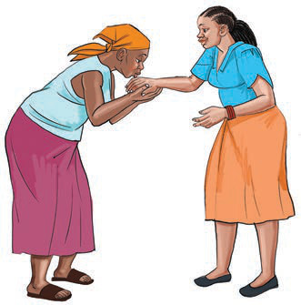
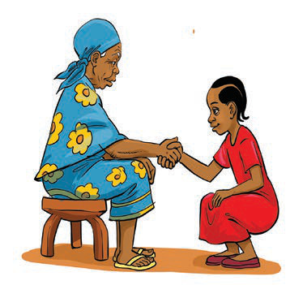
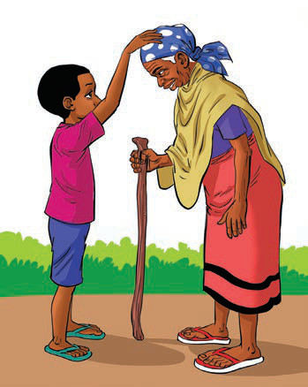
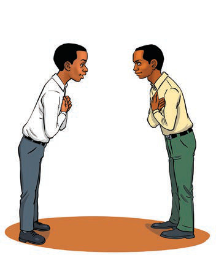

Chunguza matendo ya kusalimiana katika Kielelezo namba 1, kisha jibu zoezi linalofuata.




Kielelezo namba 1:
Matendo ya kusalimiana
Chunguza matendo ya kusalimiana katika Kielelezo namba 1, kisha jibu zoezi linalofuata.



